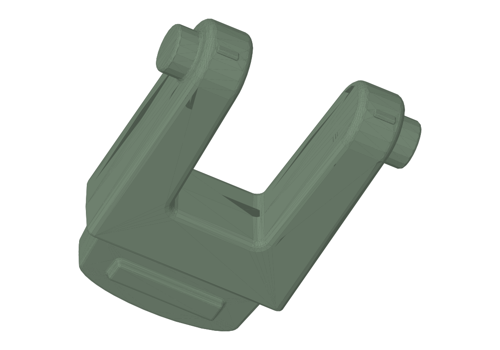

Fit undocumented
Fit to be documentedUHK foot
Fit to be documented

Model preview
Print & assembly notes
Use the original project in your slicer and confirm scale, orientation, material, and machine settings before printing.
Validation
This project is preserved in the collection. Record material, fit, and print results after the next print. See the original notes for known provenance.
Project files & revisions
Earlier revisions and alternatives.
All model files for this project are listed above.